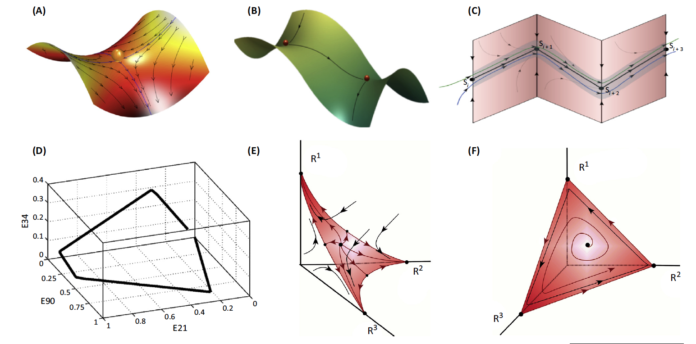

Week 13: neural comp, III
Lecture 13.1: neural dynamics

what neurons do: dynamics
-
Why dynamics? [Rehearse the concepts of
dynamics; systems.]
-
The restless brain (Two views of brain function, M. Raichle,
Trends in Cognitive Sciences 14:180-190, 2010).
-
State-space trajectories (Lecture 11.2:
Buszaki on neurons doing readout, etc.).
-
Liquid state machines (this lecture: Buonomano & Maass, 2009).
-
Some tools for understanding brain dynamics (Rabinovich et al., 2015).
the restless brain (Raichle, 2010)

The brain is NOT primarily about merely responding to stimuli —
"Whilst part of what we perceive comes through our
senses from the object before us, another part (and it
may be the larger part) always comes out of our own
head."
— William James (1890)
[Compare with Lecture 2.2, slide 12]
"In the resting state, brain blood flow accounts for 11% of the
cardiac output and brain metabolism accounts for 20% of the energy
consumption of the body, overshadowing the metabolism of other organs such
as the heart, liver and skeletal muscle as shown on the left (above) in
this classic image of whole body glucose consumption. The changes in
regional blood flow associated with task performance are
often no more than 5% of the resting blood flow of the brain from which
they were derived (center) and, hence, only discernable in difference
images averaged across subjects as shown above on the
left right. These modest
modulations in ongoing circulatory and metabolic activity rarely affect the
overall rate of brain blood flow and metabolism during even the most
arousing perceptual and vigorous motor activity."
the liquid state analogy (Buonomano and Maass, 2009)
Inputs interact with internal states. The response of a population of
neurons in a network is determined not only by the characteristics of the
external stimulus but also by the dynamic changes in the internal state of
the network.
For instance, whether a neuron responds to a tone depends
not only on the frequency of the tone but also on whether the neuron is
receiving additional internally generated excitatory and inhibitory inputs
and on the current strength of each of its synapses (which vary on a rapid
timescale).
This general point can be intuitively understood by making an analogy
between neural networks and a liquid. A pebble thrown into a pond will
create a spatiotemporal pattern of ripples, and the pattern produced by any
subsequent pebbles will be a complex nonlinear* function of the interaction
of the stimulus (the pebble) with the internal state of the liquid (the
pattern of ripples when the pebble makes contact). Ripples thus establish a
shortlasting and dynamic memory of the recent stimulus history of the
liquid. Similarly, the interaction between incoming stimuli and the
internal state of a neural network will shape the population response in a
complex fashion.
*Not true: for small-amplitude surface
waves, the interaction (superposition) is linear.
a neural state-space trajectory (Buonomano and Maass, 2009)
(a) A schematic of a neural trajectory.
The firing pattern of two neurons over five [six, actually] time bins
constitutes the trajectory of this two-neuron network, with the number of
spikes of each neuron during each time bin plotted on the axes of a
two-dimensional plot. The spikes generated by two different hypothetical
stimuli are represented in blue and red, and each produces a different neural trajectory
(lower plot). Importantly, each point on the trajectory can potentially be
used to determine not only which stimulus was presented, but also how long
ago the stimulus was presented (color-coded circles). Thus, the neural
trajectory can inherently encode spatial and temporal stimulus
features. The coordinates represent the number of spikes of each neuron at
each time bin (derived from the upper plot).
a neural trajectory in the locust olfactory system (Buonomano and Maass, 2009)
(b) An example of the active trajectory of a population of neurons
from the locust antennal lobe [recall
Lecture 11.2].
When the number of neurons is large, dimensionality reduction must
be performed before the trajectory can be visualized. Here,
87 projection neurons from the locust were recorded during multiple
presentations of 2 odours
(citral and
geraniol). These data were
used to calculate the firing rate of each neuron using 50 ms time bins. The
87 vectors were then reduced to 3 dimensions. The resulting
three-dimensional plot reveals that each odour produces a different
trajectory, and thus different spatiotemporal patterns of activity. The
numbers along the trajectory indicate time points (seconds), and the point
marked B indicates the resting state of the neuronal
population.
a neural trajectory in the locust olfactory system: the readout (Broome et al. 2006)
Spread of KC2 [Kenyon cell #2] spike times in response to geraniol
(raster at top) overlaid (magenta) on PN ensemble responses as
represented by LLE
[locally linear embedding]. PN
[antennal lobe projection neuron] ensemble responses
are shown for the pure conditions (green, cyan) as well as two
overlap conditions (black): (Ai) geraniol, to which KC2 responds;
(Aii) ger-100ms-cit, during which the response of KC2 is partly
masked; (Aiii) cit-100ms-ger, during which the response to
geraniol is completely masked. The firing times and strengths of
KC2 are well matched to the instantaneous state of the PN
trajectory.
Bede M. Broome et al. (2006). Encoding and Decoding of
Overlapping Odor Sequences, Neuron 51:467-482.
short-term synaptic plasticity (Buonomano and Maass, 2009)

(a) An example of short-term plasticity of excitatory postsynaptic
potentials
(EPSPs) in excitatory synapses between
[cortical]
layer 5 pyramidal
neurons. The traces represent the EPSPs from
paired recordings; each presynaptic action potential is marked by a dot.
Short-term plasticity can take the form of either short-term
depression [contrast with
LTD] (left) or short-term facilitation [contrast with
LTP] (right).
The plots show that the strength of synapses can vary dramatically as a
function of previous activity, and thus function as a short-lasting memory
trace of the recent stimulus history.
hidden and active states in a network (Buonomano and Maass, 2009)
(b) Excitatory (blue) and inhibitory (red) neurons and some of their connections.
Top left: the baseline state, represented as quiescent (in reality there is
spontaneous activity).
Top right: a brief stimulus generates
action potentials in a subpopulation of the neurons (light gray
shades).
Bottom left: "hidden" state. After the stimulus, as a result of
short-term synaptic plasticity (dashed lines) and changes in intrinsic and
synaptic currents (different color shades), the internal state may
continue to change for hundreds of ms. Thus, although it is
quiescent, the network should be in a different functional state at the
time of the next stimulus (at t = 100ms).
Bottom right: because the network is in a different state,
it would generate a different response pattern to the next stimulus, even
if the stimulus is identical to the first one (a different pattern of
blue spheres).
history-dependent CLIMATE dynamics
"El Niño and global warming are mixing in alarming
ways. Havoc in poor countries and commodities markets is
inevitable."
[From The
Economist article, Aug 24th 2023]
discrimination of complex spatiotemporal patterns (Buonomano and Maass, 2009)
(a) A spectrogram of the spoken word "one".
(b) A cochlear model [here, a 40-neuron one] can be used to
generate a spatiotemporal
pattern of spikes generated by the word "one" (lower left). This
pattern can be reversed (lower right) to ensure that the network is
discriminating the spatiotemporal patterns of action potentials, as
opposed to only the spatial structure. One can perform a
principal-component analysis on the [binned averages of the] spikes of the input patterns, and
by plotting the first three dimensions create a visual representation of
the input trajectory. The upper panels show that the trajectories are
identical except that they flow in opposite temporal directions. Time is
represented in color: note the reverse color gradient.
Note that this signal from the cochlear model is just the input to
the cortical model, illustrated on the next slide.
discrimination performance: active states in a cortical microcircuit model (Buonomano and Maass, 2009)
(c) The raster of an 80-neuron subset of a 280-neuron
recurrent network in response to forward
(blue) and reverse
(red) directions. The neural trajectories
(lower plots) show that the spatiotemporal spike patterns are no
longer the reverse of each other.
(d) A linear read-out [illustrated on the next
slide] can distinguish between the original speech input and its
time reversal at most points in time. A single linear read-out that
received synaptic inputs from all neurons in the circuit was trained
to produce large output values for any active state that occurred
when the word "one" was spoken, but low output values at any time
during the time-reversed version of "one". The resulting output
values of the read-out are shown for a new trial that included noise
injections into the neurons. The ability of this simple linear
read-out to distinguish original and time-reversed spike patterns
demonstrates that not only does the circuit process
the spatial (= neural-space) aspects of these input patterns,
but every active state also transmits information about
the temporal context of each spatial input pattern.
read-out (Buonomano and Maass, 2009)
On the right — (e) A schematic of the [cortical
microcircuitry model] recurrent network, with the components
aligned with the relevant sections of parts (b)-(d). Several neurons
provide input to excitatory neurons that are part of a recurrent
network. The excitatory neurons in this network send a
multi-dimensional signal to a single downstream read-out neuron.
On the left — pattern recognition in a bucket.
[EXTRA] programming a reservoir computer (Kim and Bassett, 2022)

Unfurling neural states as a weighted sum of input
variables.
-
Inputs to our RNN [recurrent neural network], which do not
represent specific numerical values, but rather symbolic
variables.
-
We expand the activity of the RNN neurons as a weighted sum
of polynomials in the input variables and their time
derivatives.
-
We can then program an output matrix W that maps the RNN’s
symbolic representation of its inputs to any
analytic
al function of the
inputs, such as a rotation. (d) When we drive the programmed
RNN with a complex input such as the chaotic
Thomas attractor, the output is a rotated
version of the input (typical relative error is less than
1%).
A Neural Programming Language for the Reservoir
Computer, Jason Z. Kim & Dani S. Bassett (2022).
arXiv:2203.05032v1 [cond-mat.dis-nn].
read-out from high-dimensional representations (Buonomano and Maass, 2009)
(a) Read-out can be computed as a linear combination (that
is, weighted sum) \(w_1 x_1 + w_2 x_2 + \ldots w_d x_d\) of the
inputs \(\textbf{x}\). Geometrically, the locus of points at which the
weighted sum is exactly equal to a threshold is a hyperplane in the
\(d\)-dimensional input space, illustrated here for \(d = 3\),
together with two trajectories. Such perfect separation, however,
cannot be expected in general.
(b) Mathematical results imply that
linear separation becomes much easier when the
dimension of the state space exceeds the "complexity" of the
trajectories. Black: the probability that 2 trajectories that
each linearly sequentially connect 100 randomly
chosen points can be separated by a hyperplane [the scale is on the
left vertical axis]. Green: the
average of the minimal Euclidean distance between pairs of
trajectories [right vertical axis]. In higher dimensions, not only
is it more likely that any two such trajectories can be separated,
but also they can be separated by a hyperplane with a larger
"safety margin".
Projections of external inputs into higher dimensions are
quite common in the brain. For example, ~1 million axons from each optic
nerve send visual information to the
lateral geniculate nucleus, where it is combined with
information from the
pulvinar (another
thalamic nucleus) and sent on to the primary visual
cortex, in which there are ~500 million neurons.
population activity in the cat brain (Buonomano and Maass, 2009)
Population activity from the
cat visual cortex encodes both the current
and previous stimuli.
(a) A sample stimulus, with the receptive fields (squares) of the
recorded neurons superimposed.
(b) The spike output of neuron number 10* for 50
trials with the letter sequence A, B, C as the stimulus and 50
trials with the letter sequence D, B, C as the stimulus. The
temporal spacing and duration of each letter is indicated
through green shading. The lower plot is a
post-stimulus time histogram (PSTH) showing the response of neuron
10 over the 50 trials.
*Neuron 10 is shown in blue
in part c on the next slide.
population activity in the cat brain (Buonomano and Maass, 2009)
(c) The spike response of 64 neurons during trial number 38
for the letter sequence A, B, C (left;
the blue trace shows the behavior of
neuron 10 [from the previous slide]), and the read-out mechanism
that was used to decode information from these 64 spike trains
(upper right). Each spike train
was low-pass filtered and sent to a
linear discriminator.
Traces of the resulting weighted sum are shown in the lower
right-hand plot both for the trajectory of active states resulting
from stimulus sequence A, B, C (black trace) and for
stimulus sequence D, B, C (orange
trace). For the purpose of classifying these active states, a
subsequent threshold was applied. The weights and threshold of the
linear discriminator were chosen to discriminate active states
resulting from letter sequence A, B, C and those resulting from
the letter sequence D, B, C.
decoding population activity in the cat brain (Buonomano and Maass, 2009)
(d) The performance of a linear discriminator at various points in
time. The red line shows the percentage of the cross-validated trials that
the read-out correctly classified as to whether the first stimulus was A or
D. The read-out neuron contained information about the first letter of the
stimulus sequence even several hundred milliseconds after the first letter
had been shown (and even after a second letter had been shown in the
meantime). Note that discrimination is actually poor during the A and D
presentation because of the low average firing rate (blue dashed lines).
[EXTRA: Are cats spying on us?]
[EXTRA]: reservoir computing for predicting chaotic dynamics
[The
Quanta Magazine story.]
(a) Training data gathering phase. (b) Predicting phase.
It is assumed that the parameters of the reservoir are chosen such
that the “echo state property” is satisfied; i.e., all of the
conditional
Lyapunov exponents of the training reservoir
dynamics
conditioned on \({\bf u}(t)\) are negative so that, for large
\(t\), the reservoir state \({\bf r}(t)\) does not depend on
initial conditions.
Prediction of
KS equation \((L = 200, Q = 512,
\mu = 0.01, \lambda = 100)\) with the parallelized reservoir
prediction scheme using 64 reservoirs. (a) Actual KS equation data.
(b) Reservoir prediction \([\tilde{{\bf u}}(t)]\). (c) Error in the
reservoir prediction. (d) Error in a prediction made by
integrating the KS equation when it uses the reservoir output at
\(t = 0\), \([\tilde{{\bf u}}(0)]\), as its initial condition.
— Model-free prediction of large
spatiotemporally chaotic systems from data: a reservoir computing
approach (2018). J. Pathak et al.,
Physical Review Letters 120:024102.
next: brain-scale dynamics and the brain as a complex system

On the right: the subfields of the field
of complex dynamical systems.
Why consider the DYNAMICS of the brain (as opposed to just the anatomy, or static
snapshots of activity)???
- time
- collective action
- specific and nonlinear interaction
A key concept is metastability, illustrated on
slides 23 and 24.
brain dynamics: transient functional dynamics (Rabinovich et al., 2015)
(A) Time series of anticorrelated switching in different FUNCTIONAL
NETWORKS during resting state. Arrows indicate intraparietal sulcus (IPS),
posterior cingulate/precuneus (PCC), and medial prefrontal cortex
(MPF).
(B) Stimulus-dependent reorganization of the FUNCTIONAL
CONNECTIVITY by the frontoparietal brain network (FPN) among visual,
auditory, and motor systems across two different tasks. Global variable
connectivity is depicted by the shifting connectivity pattern (red lines
connecting FPN to other brain networks). The importance of sequential
switching between network arrangements is signified by blue lines between
the two networks.
brain dynamics: winnerless competition (WLC) dynamics (Rabinovich et al., 2015)
(A,B) the response to an
odorant in an insect antennal lobe. It is the intrinsic transient dynamics
of the complex antennal lobe system that maps such input to a sequential
representation as seen in these single-trial responses of 110 antennal
lobe neurons to one odor shown in (A) (gray bar, 1 s). Panel (B) shows the
projections of neuron trajectories, representing the succession of states
visited by this neural network in response to one odor. Red lines,
individual trials; black line, average of ten trials. Abbreviations: B,
baseline state; FP, fixed point, reached after 1.5 s.
(C) the taste-specific robust sequential pattern observed in
neurons of the gustatory cortex of the rat in response to four taste
stimuli. A model of joint temporal activity reveals that the network
behavior is best represented by four discrete states in a WLC
setting.
brain dynamics: landscape metaphors for transient dynamics with metastable states (Rabinovich et al., 2015)

(A) A saddle with two stable and two unstable separatrices
(boundaries separating two modes of behavior). A set of saddles can
be sequentially connected by unstable separatrices (B) to form a
STABLE HETEROCLINIC CHANNEL (C).
(D) The low-dimensional heteroclinic dynamics of a large neuronal
model network – 200 excitatory/inhibitory neuronal clusters.
(E) The transient dynamics of attention; in this case, one
cognitive modality out of three requires full attention.
(F) Attention sharing (sequential switching of attention among
three different modalities) in the same model with different
intrinsic/extrinsic inputs.
Heteroclinic dynamics may serve an appropriate mathematical framework for
robust transient processes that can be treated as an itinerary pass through
metastable states. A heteroclinic channel is robust provided
that the
compression of the phase volume in the vicinity of the metastable states
is stronger than the stretching, and trajectories that come to this area
become prisoners, and thus unable to leave it.
brain dynamics: multimodality interactions (Rabinovich et al., 2015)
(A) An example of three modality binding networks in the context of
the discussed model (filled and unfilled circles: inhibitory and
excitatory connections).
(B) The corresponding phase
portrait of the binding dynamics. The
unstable separatrices that connect different metastable states are 2D in
this case. Q and \(\Gamma\): the metastable states; S are the corresponding
separatrices.
(C) An example of a three-level chunking hierarchical network
architecture. It can be, for example, text creation: with the first level
representing the organization of sentences; second level, paragraph
creation; and upper level, chapter organization. Spheres represent the
informational items or units (metastable states). Different colors
indicate different chunks. All connections inside the elementary items are
inhibitory.
(D) The corresponding phase portrait of the chunking activity in
the phase space of auxiliary variables. Blue trajectories represent the
dynamics inside the chunk. Green trajectories represent the chunk
sequential switching.
lessons?
So, what is it that neurons do natively?
-
Respond selectively (tuning) [recall the idea of representation by
similarities to landmarks/prototypes, a.k.a. the Chorus Transform].
-
Form maps (retinotopy, tonotopy, chronotopy, etc.) to address various
cognitive tasks.
-
Do linear algebra (vector projection / inner product, matrix
multiplication).
-
Implement dimensionality reduction (from many dimensions to one),
including similarity-preserving DR by random projections.
-
Perform function approximation (when arranged in multilayer networks).
-
Learn (BCM; STDP).
-
Organize in dynamic assemblies (nonlinear computation and read-out;
itinerancy, winnerless competition, sequence processing).